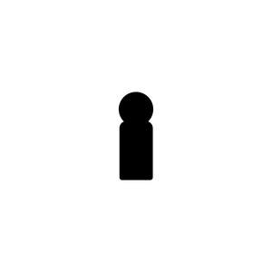

Trade Mark Journal No.2025/013 28 March 2025
UK00004162731 20 February 2025 (3,8,10,11,21,24,26,35,44)

- Class 3
- Hair shampoo; Hair shampoos; Hair relaxers; Hair dye; Hair pomades; Hair texturizers; Hair conditioner; Hair mousse; Hair lighteners; Dyes for the hair; Hair dyes; Hair mascara; Hair bleaches; Hair bleach; Hair colourants; Hair serums; Hair lotion; Hair lotions; Hair cosmetics; Hair moisturizers; Hair rinses; Hair gel; Hair mousses; Hair conditioners; Hair color; Hair moisturisers; Hair styling lotions; Hair colouring; Hair wax; Hair sprays; Hair oils; Hair spray; Shampoos for human hair; Hair creams; Hair styling gel; Hair cream; Hair gels; Hair colorants; Hair emollients; Hair nourishers; Hair powder; Styling sprays for the hair; Baby hair conditioner; Hair oil; Tints for the hair; Hair tonics; Hair chalks; Hair styling waxes; Hair lacquer; Hair masks; Hair lacquers; Hair styling spray; Hair balm; Hair balsam; Hair balms; Hair styling gels; Styling gels for the hair; Colouring lotions for the hair; Hair tonic; Hair liquid; Styling paste for hair; Hair glaze; Hair glazes; Non-medicated hair shampoos; Hair rinses [for cosmetic use]; Hair and body wash; Cosmetic preparations for the hair and scalp; Wax treatments for the hair; Hair liquids.
- Class 8
- Hair clippers; Hair straightening irons; Hair clippers for babies; Electric hair straighteners; Electric hair braiders; Hair braiders, electric.
- Class 10
- Hair prostheses; Prostheses (Hair -).
- Class 11
- Dryers (Hair -); Hair dryers; Driers (Hair -); Hair driers; Hair driers for use in beauty salons.
- Class 21
- Hair combs; Combs for back-combing hair; Hair brushes; Hair for brushes; Large-toothed combs for the hair; Combs for the hair (Large-toothed -); Electric hair combs.
- Class 24
- Turban towels for drying hair.
- Class 26
- Tresses of hair; Hair (Tresses of -); Hair tresses; Plaits of hair; Hair ornaments, hair rollers, hair fastening articles, and false hair; Hair scrunchies; Hair barrettes; Hair curlers; Plaited hair; Hair (Plaited -); Hair twisters [hair accessories]; Hair elastics; Bows for the hair; Hair bows; Hair extensions; Hair ribbons; Ribbons for the hair; Hair weaves; Hair ribbons for Japanese hair styling (tegara); Hair rollers; Hair ornaments in the nature of hair wraps; Hair tassel strings for Japanese hair styling (motoyui); Hair pins; Pins for the hair; Hair clips; Sticks for use in styling the hair; Synthetic hair; False hair for Japanese hair styling (kamoji); Hair curl clips; Ornaments (Hair -); Ornaments for the hair; Hair ornaments; Hair tassel ornaments for Japanese hair styling (negake); Human hair; Hair bands; Bands for the hair; Bands (Hair -); Electric hair curlers; Hair pieces; Hair curling pins; Ornamental hair pins for Japanese hair styling (kogai); Hair wraps.
- Class 35
- Retail services in relation to hair products.
- Class 44
- Shampooing of the hair; Hair styling; Hair treatment; Hair cutting; Hair perming services; Hair braiding services; Hair weaving; Hair restoration.
Nana Yaa Asare